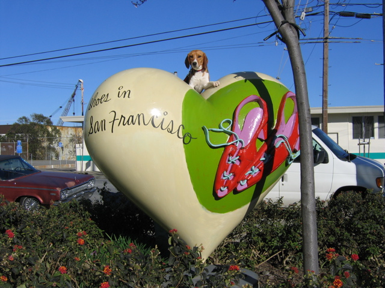

<--Previous Up Next-->

On top of the world
This ... thing is one of a hundred-some quickie artworks that blanketed San Francisco in 2004. When I first saw it, I thought the red objects were a real heart with veins and everything.
This heart happens to be in the obscure neighborhood of San Francisco known as "Dogpatch".